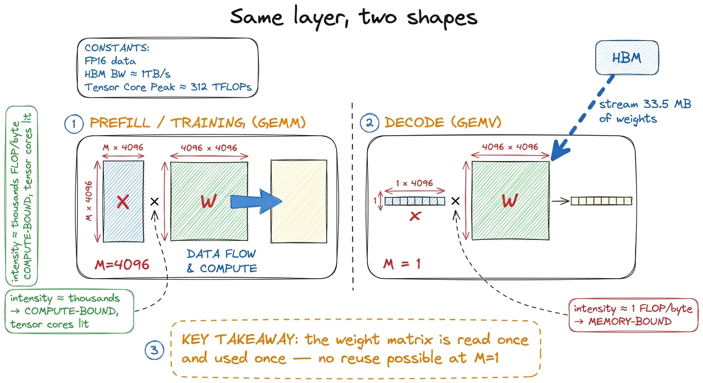
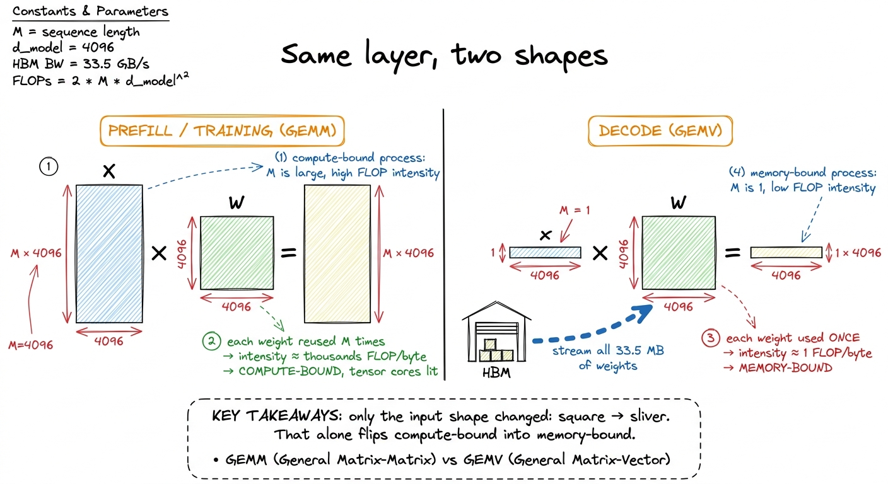
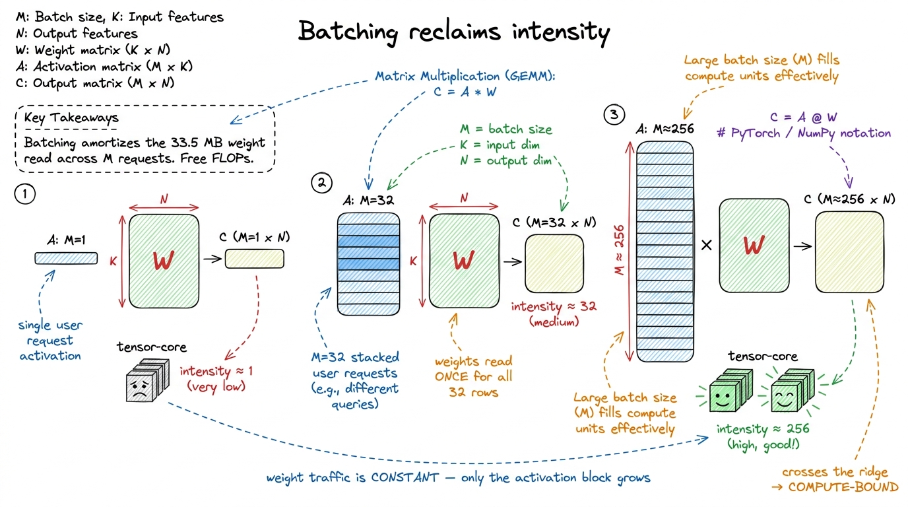
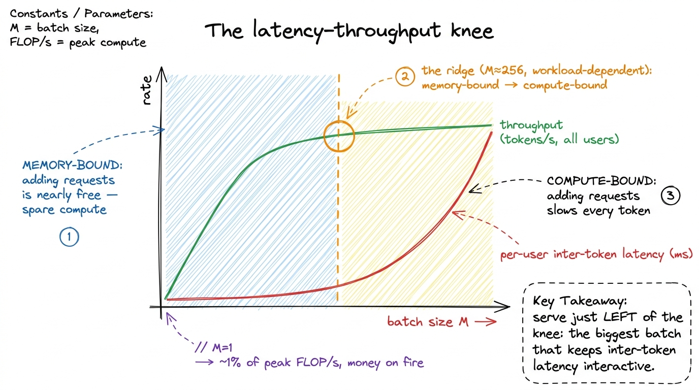

Batched decode: the GEMV problem
Training a large model is one long parade of fat matrix multiplications, and the GEMM ladder we spent the last ten kernels climbing is exactly the right tool for it. Then you deploy the model, a user types a prompt, and you generate the reply one token at a time — and every fat matmul quietly collapses into a skinny one. The weight matrices are the same. The tensor cores are the same. But suddenly the profiler tells you the H100's 989 TFLOP/s of BF16 are almost entirely wasted, and you are barely brushing HBM bandwidth. This article is about why that happens, and what batching does about it.
The first time I profiled this I assumed I had a broken kernel. I did not. The short version: single-token decode is a GEMV, and a GEMV is memory-bound. Everything about serving throughput follows from that one fact.
Why decode is a skinny matmul
Take a single linear layer inside the model — say a projection with weight W of shape [d_out, d_in], with d_in = d_out = 4096. During training, or during the prefill phase where you process the whole prompt at once, you push a batch of M tokens through it and compute Y = X · Wᵀ where X is [M, 4096]. If M is 4096, this is a square-ish GEMM with an arithmetic intensity in the thousands of FLOPs per byte — far past the H100's ridge point of roughly 295 FLOPs/byte.1 The ridge point is peak-compute / peak-bandwidth: 989e12 / 3.35e12 ≈ 295. Below it you are memory-bound, above it compute-bound. See the three regimes for where this number comes from. That layer is compute-bound. Good. The tensor cores earn their keep.
Now generate. Autoregressive decode produces one token per forward pass — you feed in the single most recent token, run the whole network, sample the next one, and repeat. So for that same layer, M = 1. The input X is [1, 4096]: a vector. Multiplying a [4096] vector by a [4096, 4096] matrix is a General Matrix-Vector multiply (GEMV), not a GEMM. And GEMV has nowhere near enough arithmetic to hide behind.
Let us do the napkin math, because it is the whole story. That single GEMV performs about 2 × 4096 × 4096 ≈ 33.5 MFLOP. To do it, we must read the entire weight matrix from HBM once: 4096 × 4096 × 2 bytes (BF16) ≈ 33.5 MB. The activation vector itself is a rounding error — 4096 × 2 = 8 KB. So the arithmetic intensity is:
intensity ≈ 33.5e6 FLOP / 33.5e6 bytes ≈ 1 FLOP per byteOne FLOP per byte. The ridge point is 295. We are almost three hundred times below the line. No tiling, no shared-memory trick, no wgmma instruction can save a kernel whose fundamental job is to stream a giant weight matrix past a tiny vector and multiply-accumulate once. We are reading each weight exactly once and using it exactly once. This is the naive-GEMM disease from kernel 1 — no reuse — except here it is not a bug we can fix. It is the arithmetic of the problem.

figure rendering · The identical weight matrix is compute-bound at M=4096 and memory-bounWhat memory-bound decode actually costs
Once you accept that decode is bandwidth-limited, the performance model becomes almost trivially predictable — which is a gift. The time to generate one token is not set by FLOPs; it is set by how long it takes to read every weight in the model from HBM exactly once.
For a model with P parameters in BF16, one decode step must move roughly 2P bytes through the memory system. On an H100 with 3.35 TB/s of HBM3, the floor on per-token latency is:
t_token ≈ 2 · P / 3.35e12 secondsA 7-billion-parameter model: 2 × 7e9 / 3.35e12 ≈ 4.2 ms per token, or about 240 tokens/second, as an absolute ceiling — before attention, before the KV cache, before any kernel-launch overhead.2 The real number is lower. This floor ignores the KV cache reads, which grow with sequence length and can dominate at long context, and it assumes you saturate HBM, which small skinny kernels rarely do. Treat it as an optimistic upper bound, not a promise. Notice what is absent from that formula: the tensor cores, the FLOP/s, the clock speed of the math units. They do not appear because they are not the bottleneck. You could double the H100's compute and this number would not move.
This is why, when I profile a decode kernel in Nsight Compute, the compute-throughput chart sits embarrassingly low — often in the low single-digit percentages, the same neighborhood as kernel 1's 1.3% — while the DRAM-throughput chart is the one pinned near the top. The kernel is doing exactly what physics says it must: heaving weights.

figure rendering · Per-token latency is a bandwidth calculation. The tensor cores watch fBatching: buy back arithmetic intensity
Here is the escape hatch, and it is beautiful because it is free in the FLOPs it adds. Notice that the expensive part — reading the 33.5 MB weight matrix — happens regardless of M. If we process one token, we read the weights once for one token. If we process 32 tokens from 32 different user requests in the same forward pass, we read the weights once for all 32. The weight traffic is amortized across the batch.
Stack M decode requests and the GEMV becomes a short-and-fat GEMM: X is [M, 4096], and the arithmetic intensity climbs almost linearly with M:
FLOP ≈ 2 · M · 4096 · 4096
bytes ≈ 4096·4096·2 (weights) + M·4096·2 (activations)
intensity ≈ 2·M·4096·4096 / (4096·4096·2) ≈ M FLOP per byteSo intensity ≈ M. At M = 1 we are at 1 FLOP/byte and hopelessly memory-bound. At M = 32 we are at ~32. To cross the H100's ridge point of ~295 and finally become compute-bound, we need a batch of roughly 256 to 300 concurrent sequences.3 In practice you become compute-bound earlier than the naive ridge point suggests, because at larger M the kernel also starts reusing weights out of L2 (~50 MiB) rather than re-fetching from HBM, which effectively raises your usable bandwidth. The crossover is workload-dependent; measure it. That is the number the entire inference-serving industry is organized around.
The payoff is enormous and it costs nothing per token in math: batching 256 requests does 256× the FLOPs but reads the weights the same one time. The GPU that was running at 1% of peak on a single sequence can run near its compute ceiling on a full batch. Throughput — total tokens per second across all users — can climb by more than two orders of magnitude before you hit the compute wall.

figure rendering · The weight read is a fixed cost. Every extra sequence in the batch isThe catch: batching trades latency for throughput
If batching were pure upside, there would be nothing to write about. The catch is that the two numbers you care about pull in opposite directions.
Throughput is total tokens/second across every user on the box. It loves big batches, because each weight read serves more requests. Latency — how long your token takes to come back — has two flavors: time-to-first-token (dominated by prefill) and inter-token latency during generation. Bigger batches hurt inter-token latency in two ways. First, a request that arrives at an inconvenient moment may wait for the current step to finish and for the batch to form. Second, once you cross the ridge point into the compute-bound regime, the step itself gets slower with M: below the ridge, adding sequences is nearly free because you were bandwidth-limited with spare compute; above it, you are out of spare compute and every added sequence lengthens the step proportionally.
So the operating point is a genuine tradeoff, not a free lunch. Push the batch too small and you burn money — an H100 running decode at M = 1 is delivering maybe 1% of the FLOP/s you are paying for. Push it too large and individual users watch their tokens dribble out slowly, and you may overflow the KV-cache memory budget besides. The sweet spot for most serving stacks sits somewhere in the tens-to-low-hundreds of concurrent sequences — enough to drag arithmetic intensity up toward the ridge without pushing per-user latency past what feels interactive.

figure rendering · Throughput and latency trade against each other across the ridge pointContinuous batching: keeping the batch full
The naive way to batch — static batching — is to collect N requests, run them all in lockstep until every one emits its end-of-sequence token, then start the next group. This is terrible in practice, because sequences finish at wildly different lengths. One request wants 8 tokens, another wants 800. Under static batching the whole batch is held hostage by its longest member: the 8-token request finished ages ago but its slot in the [M, d] activation matrix sits idle, still being multiplied by the full weight matrix, contributing nothing but still paying its share of the compute.
Continuous batching (also called in-flight or iteration-level batching) fixes this by making batch membership dynamic at the granularity of a single decode step. The moment a sequence emits its end token, it is evicted from the batch and its slot is immediately handed to a waiting request from the queue.4 This is the core scheduling idea behind vLLM and TensorRT-LLM's in-flight batcher. It pairs naturally with PagedAttention-style KV-cache management, because slots free and fill constantly and you cannot assume contiguous per-request cache blocks. The batch is refilled every iteration instead of every group, so the GPU never grinds away on finished sequences and the effective M stays high and stable.
Why this belongs in a kernel article and not just a scheduler one: the entire justification for the scheduler is the arithmetic-intensity curve above. Continuous batching exists to keep M — and therefore your position on that intensity axis — pinned as close to the compute-bound ridge as the latency budget allows, at every step, without the static-batching bubbles that drop you back toward the memory-bound floor. The kernel and the scheduler are solving one problem from two ends. The kernel makes each batched GEMV as efficient as the hardware allows; the scheduler makes sure there is always a fat enough batch for that efficiency to matter.
Where this leaves the tensor cores
It is worth sitting with the irony. The tensor cores are the most expensive, most heavily marketed part of the H100 — 989 TFLOP/s of them — and in single-sequence decode they are nearly idle, because a GEMV has no reuse for them to exploit. They only start earning their transistors once batching has fattened the matmul back into a real GEMM. This is the deep reason the inference and training performance stories are so different: training is a compute-bound world where the GEMM ladder rules, and decode is a memory-bound world where bandwidth and scheduling rule, with the same tensor cores sitting under both.
Everything downstream of here — KV-cache layout, quantizing weights to move fewer bytes per token, speculative decoding to get more useful tokens per weight-read, MoE routing that only touches a fraction of the parameters — is a variation on the single theme this article established: decode is memory-bound, so spend your effort moving fewer bytes or amortizing each byte across more useful work. In the next article we take the most brutal of those levers, weight quantization, and measure exactly how many bytes-per-token — and therefore how many tokens-per-second — we can buy back by dropping from BF16 to FP8 and below.